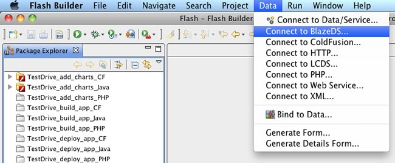

Model driven development¶
In previous sections of this article, you learned to use the Remoting and Messaging services of BlazeDS and LCDS and the Data Management service of LCDS to build data-centric applications. You can build these types of applications even faster using the Adobe application modeling technology (code named Fiber), a set of technologies that together enable model driven development for Flex applications, which can be used to generate both client and server-side code.
Generating client-side code using Flash Builder¶
Instead of using the RemoteObject class (or other RPC classes) to make calls to server-side classes, you can use Flash Builder to create ActionScript service wrapper classes and use these classes. The RPC service wrapper classes have public methods with the same names as the corresponding server-side classes making development and debugging much simpler.
In order to generate client-side code, RDS access must be enabled on the server so Flash Builder can introspect server-side Java classes and configuration files. To enable RDS access, you need to add and/or uncomment a mapping for the BlazeDS 4 or LiveCycle Data Services 3 RDSDispatchServlet in the web application’s web.xml file and disable security by setting the useAppserverSecurity parameter to false (or alternatively, set up and enable security).
<servlet>
<servlet-name>RDSDispatchServlet</servlet-name>
<display-name>RDSDispatchServlet</display-name>
<servlet-class>flex.rds.server.servlet.FrontEndServlet</servlet-class>
<init-param>
<param-name>useAppserverSecurity</param-name>
<param-value>false</param-value>
</init-param>
<load-on-startup>10</load-on-startup>
</servlet>
<servlet-mapping id="RDS_DISPATCH_MAPPING">
<servlet-name>RDSDispatchServlet</servlet-name>
<url-pattern>/CFIDE/main/ide.cfm</url-pattern>
</servlet-mapping>
Once RDS is enabled for the server, you can generate ActionScript service wrappers in Flash Builder using the Data menu (see Figure 5).
Figure 5. The Flash Builder Data menu for creating client-side code.
When selecting Connect to BlazeDS or Connect to LCDS, you will get a dialog box displaying all the server-side destinations defined in the configuration files (see Figure 6).
Figure 6. The dialog box for selecting service destinations.